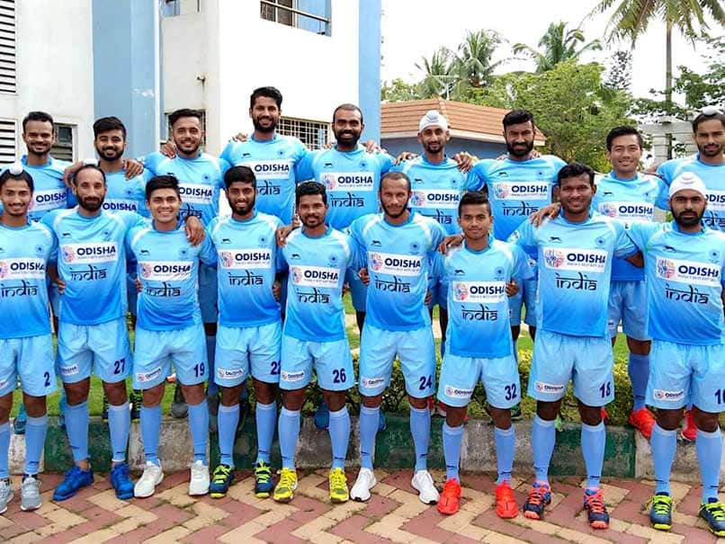

Home
History of The Indian Hockey Team And Dhyanchand


The India men's national field hockey team[2] was the first non-European team to be a part of the International Hockey Federation. In 1928, the team won its first Olympic gold medal and until 1960, the Indian men's team remained unbeaten in the Olympics, winning six gold medals in a row. The team had a 30–0 winning streak during this time, from their first game until losing in the 1960 gold medal final. India also won the 1975 World Cup. India's hockey team is the most successful team ever in the Olympics, having won eight gold, one silver and two bronze medals.
After their gold medal win at the 1980 Olympics, the team's performance declined through the next three decades, with the team failing to win a medal at the Olympics or the World Cup. In 2016, the Indian men's team won its first ever silver medal in Champions Trophy and reached the knockout stage of the Olympics for the first time in 36 years. As of 2018, the team is ranked fifth in the world. From February 2018, the Government of Odisha has started sponsoring the Indian national field hockey team, both men and women team. In a first-of-its-kind association, the state has decided to support the India'ss field hockey team for next five years.[3]
Dhyan Chand (29 August 1905 – 3 December 1979) was an Indian hockey player and one of the greatest hockey players in the history of the sport.[4] He was known for his extraordinary goal-scoring feats, in addition to earning three Olympic gold medals, in 1928, 1932 and 1936, during an era where India dominated field hockey. His influence extended beyond these victories, as India won the field hockey event in seven out of eight Olympics from 1928 to 1964.
Known as The Wizard[5][6] or The Magician[7][8] of hockey for his superb ball control, Chand played internationally from 1926 to 1949; he scored 570 goals in 185 matches according to his autobiography, Goal.[9] The Government of India awarded Chand India's third highest civilian honour of Padma Bhushan in 1956.[10] His birthday, 29 August, is celebrated as National Sports Day in India every year.
Back to The Top